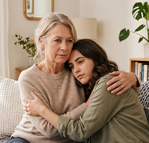
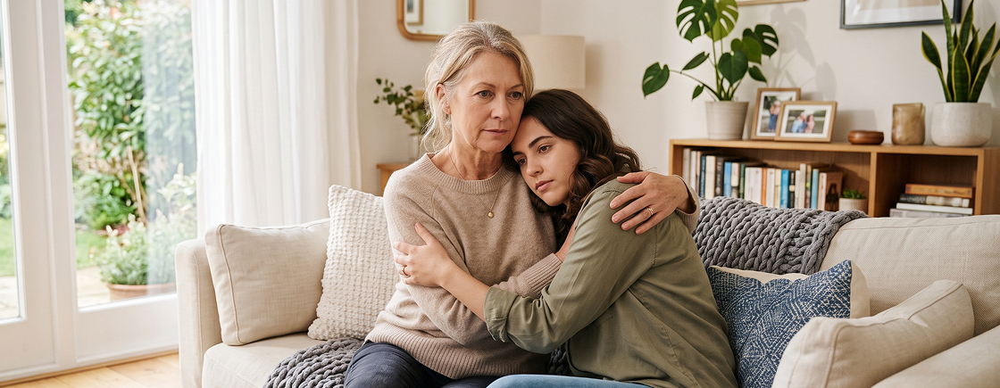
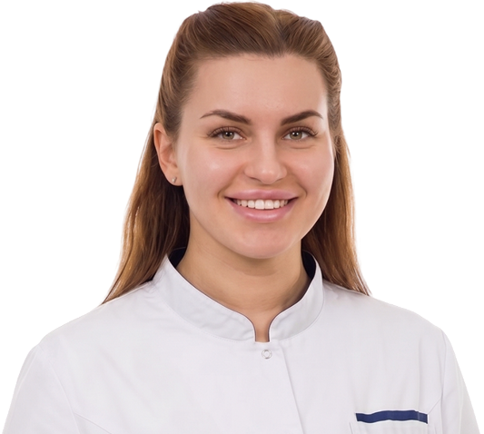

- Главная
- О клинике
- Блог клиники
- Как помочь близкому с психическим расстройством: поддержка, забота и самосохранение
Как помочь близкому с психическим расстройством: поддержка, забота и самосохранение

- Мы лечим не только зависимость, а человека целиком
- Врачи-эксперты с опытом более 15 лет
- Реаниматологи в составе команды
- Лицензированная клиника
Круглосуточно. Анонимно
8 (495) 540-57-86- Психотерапия — основа лечения
- Детоксикация — первый этап помощи при алкоголизме
- Медикаментозное лечение — контроль тяги к алкоголю
- Реабилитация — возвращение к жизни без алкоголя
- Кодирование — инструмент, но не решение проблемы
Разобраться, как помочь близкому с психическим расстройством, бывает сложно даже самым внимательным родственникам. Болезнь может влиять на настроение, поведение, восприятие происходящего и способность человека критически оценивать свое состояние. Особенно тяжело, когда близкий человек отказывается лечиться: семья пытается убедить его обратиться к врачу, но давление и постоянные споры часто только усиливают дистанцию.
Первая реакция родственников на происходящее тоже может быть разной. Кто-то испытывает страх и растерянность, кто-то злость, чувство вины или отрицание. Это нормальный ответ на ситуацию, к которой человек не был готов. Но важно помнить: поддерживать близкого — не значит становиться ответственным за все проявления болезни и полностью забывать о собственных потребностях.
Реакция на диагноз может быть разной — и это нормально
Редко кто оказывается готов услышать, что у близкого человека психическое расстройство. Даже если проблемы копились давно, диагноз все равно становится неожиданностью. Одни начинают искать, где допустили ошибку. Другие убеждены, что врачи преувеличивают и «все пройдет само». Кто-то, наоборот, испытывает облегчение: наконец появляется объяснение тому, что происходит с человеком последние месяцы или даже годы.
Такая реакция на диагноз близкого естественна. Не стоит требовать от себя спокойствия уже на следующий день после консультации. Семье тоже приходится перестраивать привычную жизнь, учиться по-новому общаться и принимать решения в ситуациях, с которыми раньше сталкиваться не приходилось.
Одна из самых частых ошибок — пытаться решить проблему привычными способами. Родственники начинают убеждать, стыдить, спорить, требовать «собраться» или «перестать себя накручивать». Но если изменения в поведении связаны с заболеванием, такие разговоры редко приносят результат. Они только усиливают раздражение и постепенно разрушают доверие между близкими.

Намного полезнее сначала разобраться, с каким состоянием столкнулась семья. Не нужно становиться психиатром, но понимать основные проявления болезни важно. Тогда легче отделить симптомы от обычных бытовых конфликтов, спокойнее реагировать на происходящее и не ждать от человека того, с чем сейчас он объективно не справляется.
В этот период обычно помогают простые вещи:
- В этот период обычно помогают простые вещи:
- обсуждать возникающие вопросы со специалистом, а не искать ответы на форумах;
- не оставаться со своими переживаниями в одиночку;
- о возможности сохранять привычный уклад жизни семьи.
Со временем растерянности становится меньше. Появляется понимание, что действительно зависит от родственников, а где нужна помощь специалистов. Именно тогда поддержка становится не эмоциональной реакцией, а осознанной и действительно полезной.
Когда нужна не поддержка, а экстренная помощь
Не каждую ситуацию можно решить спокойным разговором или записать человека на плановую консультацию. Иногда счет идет не на дни, а на часы. Главная ошибка родственников в такой момент — ждать, что состояние пройдет само, или пытаться справиться своими силами.
Экстренная помощь при психическом расстройстве нужна, если человек перестает контролировать свое поведение или возникает реальная угроза его жизни либо безопасности окружающих. Это не тот случай, когда стоит выяснять отношения или пытаться убедить человека «взять себя в руки». Сначала нужно обеспечить безопасность.
Поводом для немедленного обращения за медицинской помощью становятся ситуации, когда человек:
- высказывает мысли о самоубийстве или говорит о намерении причинить себе вред;
- уже наносит себе повреждения;
- угрожает окружающим или становится физически агрессивным;
- перестает ориентироваться в происходящем, слышит голоса, высказывает бредовые идеи;
- полностью отказывается от еды и воды;
- не способен самостоятельно заботиться о себе из-за тяжелого психического состояния.
В таких случаях не стоит ждать, что к утру станет легче, или пытаться решить проблему силами семьи. Если есть риск причинения вреда себе или другим людям, необходимо вызывать скорую медицинскую помощь по телефону 112.
Отдельно стоит сказать о госпитализации. Принудительная госпитализация по медицинским показаниям возможна только в случаях, предусмотренных законом. Это не способ заставить человека лечиться и не инструмент для решения семейных конфликтов. Такое решение принимают тогда, когда из-за психического состояния человек представляет непосредственную опасность для себя или окружающих либо не может самостоятельно удовлетворять основные жизненные потребности. Главная задача в этой ситуации — сохранить жизнь и как можно быстрее начать необходимую медицинскую помощь.
близкому плохо?
Мы приедем в течение 30 минут
Круглосуточно. Анонимно
8 (495) 540-57-86Что важно знать о состоянии близкого
Желание разобраться в болезни — совершенно естественная реакция. Но многие родственники начинают искать информацию хаотично: читают форумы, сравнивают симптомы, пытаются поставить диагноз самостоятельно или находят истории, которые только усиливают тревогу. Такой путь редко помогает понять, что происходит на самом деле.
Симптомы психического расстройства у близкого могут сильно отличаться даже при одном и том же диагнозе. Кто-то становится замкнутым и почти перестает общаться, у кого-то появляются тревога, бессонница или подозрительность, а кто-то теряет интерес к работе, семье и привычным занятиям. Именно поэтому не стоит сравнивать своего родственника с описаниями в интернете или историями других людей.
Есть несколько вещей, которые действительно важно принять с самого начала:
- психическое заболевание — это не проявление слабого характера и не недостаток силы воли;
- болезнь может менять мышление, эмоции и поведение человека;
- диагноз нельзя поставить по отдельным симптомам или советам из сети;
- восстановление редко бывает линейным: улучшение может сменяться временным ухудшением, и это не всегда означает, что лечение не помогает.
Еще одна распространенная ошибка — воспринимать каждое изменение поведения как сознательный поступок. Родственникам кажется, что человек специально отказывается разговаривать, становится подозрительным или перестает выполнять привычные обязанности. Но при многих психических расстройствах такие изменения связаны с самой болезнью, а не с желанием обидеть близких.
Чем лучше семья понимает особенности состояния, тем спокойнее проходит общение. Это не избавляет от трудностей, но помогает меньше конфликтовать, не делать поспешных выводов и вовремя замечать ситуации, когда человеку действительно требуется помощь специалиста.
Что важно знать о состоянии близкого
Пожалуй, именно с этим родственники сталкиваются чаще всего. Кажется, что решение очевидно: человек плохо себя чувствует, значит, нужно обратиться к врачу. Но на практике все оказывается сложнее. Близкий человек отказывается лечиться, убеждает, что с ним все в порядке, злится на любые разговоры о психиатре или просто обещает «разобраться самому», но ничего не меняется.
Отказ от лечения психического расстройства далеко не всегда связан с упрямством. Иногда человек действительно не замечает изменений в своем состоянии. Других пугает сам факт обращения к психиатру, возможный диагноз или необходимость принимать лекарства. Бывает и так, что заболевание снижает способность критически оценивать происходящее, поэтому убедить человека одними логическими доводами просто невозможно.
Если родственник не принимает помощь, попробуйте придерживаться нескольких правил:
- выбирайте спокойный момент для разговора, а не время конфликта;
- говорите о конкретных изменениях, которые вы замечаете, а не о диагнозах;
- не спорьте и не пытайтесь любой ценой переубедить человека;
- если есть возможность, подключите того, кому он действительно доверяет.
возможности родственников не безграничны. Если человек продолжает отказываться от лечения, а его состояние ухудшается или начинает представлять опасность для него самого либо окружающих, не стоит пытаться решить проблему только разговорами. В такой ситуации лучше как можно раньше обсудить дальнейшие действия с психиатром. Иногда именно консультация для семьи помогает выбрать правильную тактику общения и избежать ошибок.
Как говорить с человеком с психическим расстройством
Иногда родственникам кажется, что достаточно подобрать правильные слова — и человек согласится с их доводами. На практике это почти никогда не работает. Если заболевание влияет на мышление, восприятие или эмоциональное состояние, споры, давление и попытки что-то доказать обычно только ухудшают общение.
Как вести себя с человеком с психическим расстройством? Прежде всего — спокойно. Не стоит начинать серьезный разговор во время конфликта или сильного эмоционального напряжения. Если человек раздражен, напуган или встревожен, сначала лучше дать ситуации немного успокоиться.
Во время разговора помогают простые правила:
- говорите ровным, спокойным голосом;
- больше слушайте, чем убеждайте;
- задавайте вопросы вместо обвинений;
- избегайте критики, насмешек и категоричных оценок;
- не торопите человека с ответом и не перебивайте его.
Отдельная тема — бредовые идеи и галлюцинации. Родственники часто начинают доказывать, что происходящего не существует, надеясь быстро вернуть человека к реальности. Обычно это заканчивается новым конфликтом. Если человек действительно переживает такие симптомы, переубедить его спором невозможно.
Лучше признать сами переживания, а не соглашаться с их содержанием. Например: «Я вижу, что тебе сейчас очень страшно» или «Понимаю, что для тебя это выглядит реальным». Такие фразы помогают сохранить контакт и не усиливают недоверие.
Тем, кто спрашивает, как общаться с больным родственником, стоит помнить простую вещь: цель разговора — не выиграть спор и не доказать свою правоту. Намного важнее сохранить доверие, чтобы человек не закрылся окончательно и был готов принять помощь, когда сможет к ней вернуться.
Как помогать с лечением
После начала лечения родственники нередко бросаются в другую крайность — пытаются полностью взять ситуацию под свой контроль. Напоминают о каждом приеме лекарства, проверяют самочувствие по несколько раз в день, следят за каждым шагом. Желание помочь понятно, но чрезмерный контроль редко идет на пользу. Человеку важно чувствовать поддержку, а не постоянное наблюдение.
Как помочь близкому с психическим расстройством, если лечение уже началось? Самое полезное — помогать там, где это действительно необходимо, не пытаясь заменить врача или принимать решения за самого человека.
| Столбик 1 | Столбик 2 | Столбик 3 |
| Критерий | Критерий | Критерий |
| Критерий | Критерий | Критерий |
| Критерий | Критерий | Критерий |
Обычно поддержка семьи включает:
- напоминание о консультациях, если человеку сложно организовать себя;
- помощь в соблюдении рекомендаций врача;
- внимание к изменениям сна, настроения и поведения;
- обсуждение возникающих трудностей со специалистом;
- отказ от самостоятельной отмены препаратов или изменения схемы лечения.
Не удивляйтесь, если в какие-то периоды человеку становится сложнее соблюдать рекомендации. Из-за тревоги, депрессии, нарушений памяти или выраженной усталости даже простые действия могут требовать больше усилий, чем кажется со стороны. В такие моменты спокойная помощь оказывается намного полезнее, чем упреки.
При этом родственникам важно помнить о своих границах. Вы можете поддерживать человека, напоминать, сопровождать на прием и быть рядом в сложный период, но не можете контролировать течение болезни. Этим и отличается помощь семьи от лечения: первое создает человеку опору, второе остается задачей специалистов.
близкому плохо?
Мы приедем в течение 30 минут
Круглосуточно. Анонимно
8 (495) 540-57-86Как защитить себя от выгорания
Рано или поздно многие родственники замечают, что все их мысли начинают крутиться вокруг болезни близкого человека. Собственные планы откладываются, отдых вызывает чувство вины, а любая свободная минута уходит на переживания или попытки что-то исправить. Такое состояние не делает помощь лучше — наоборот, со временем сил становится все меньше.
Профилактика выгорания ухаживающих начинается не с отпуска и не с совета «думать о себе». Сначала нужно признать очевидную вещь: один человек не способен круглосуточно нести ответственность за другого. Если жить только болезнью близкого, постепенно заканчиваются и терпение, и эмоциональные ресурсы.
Чтобы сохранить силы надолго, полезно придерживаться нескольких правил:
- не отказываться полностью от работы, общения и привычных занятий;
- распределять обязанности между членами семьи, если это возможно;
- не держать тревогу и усталость только в себе;
- находить время на отдых без чувства вины;
- честно признавать собственные пределы.
Многие родственники обращаются за помощью слишком поздно — уже тогда, когда появляется раздражение, бессонница, ощущение бессилия или эмоциональная опустошенность. В такой ситуации психологическая помощь родственникам бывает не менее важна, чем лечение самого пациента. Она помогает справиться с тревогой, чувством вины и постоянным напряжением, которые месяцами незаметно накапливаются рядом с болезнью.
Как защитить себя от выгорания? Не пытаться справиться со всем в одиночку. Забота о собственном состоянии — не проявление эгоизма, а необходимое условие, чтобы сохранить силы и продолжать поддерживать близкого человека.
Где проходят границы ответственности родственников
Границы ответственности родственников начинаются с понимания простой вещи: вы можете поддерживать лечение, но не можете отвечать за все решения другого человека и течение его заболевания. Даже если вы делаете все возможное, это не означает, что кризисов больше не будет или человек никогда не откажется от помощи
Роль семьи действительно очень важна. Близкие могут:
- поддерживать обращение к специалистам;
- помогать соблюдать рекомендации врача;
- замечать изменения в состоянии и вовремя сообщать о них;
- обращаться за медицинской помощью при резком ухудшении самочувствия.
Но есть и то, что родственники делать не обязаны. Терпеть постоянные оскорбления, угрозы, физическое насилие или полностью отказаться от собственной жизни ради ухода за близким человеком — не часть лечения. Если заболевание сопровождается опасным поведением, защищать нужно не только пациента, но и остальных членов семьи.
Где проходят границы помощи близкому, заранее определить невозможно — каждая ситуация развивается по-своему. Но правило остается неизменным: поддержка не должна превращаться в саморазрушение. Чем раньше семья перестает брать на себя ответственность за то, что находится вне ее контроля, тем спокойнее удается переживать даже непростые периоды болезни.
Часто задаваемые вопросы
Источники:
Клинические рекомендации «Аменорея и олигоменорея». – Утверждены Министерством здравоохранения Российской Федерации, 2024.
Gordon C. M., Ackerman K. E., Berga S. L. et al. Functional Hypothalamic Amenorrhea: An Endocrine Society Clinical Practice Guideline // J Clin Endocrinol Metab. – 2017. – Т. 102, №5. – С. 1413-1439. – DOI: 10.1210/jc.2017-00131.
Врачи
Все врачи


Цены на услуги
Смотреть все ценыПолезные материалы
Все статьи по теме
Мы ценим наших клиентов и рады предложить специальную скидку 15% на повторный вызов нарколога на дом!
Мы ценим наших клиентов и рады предложить специальную скидку 15% на повторный вызов нарколога на дом!
Мы ценим наших клиентов и рады предложить специальную скидку 15% на повторный вызов нарколога на дом!

близкому плохо?
Мы приедем в течение
30 минут
Круглосуточно. Анонимно
8 (495) 540-57-86